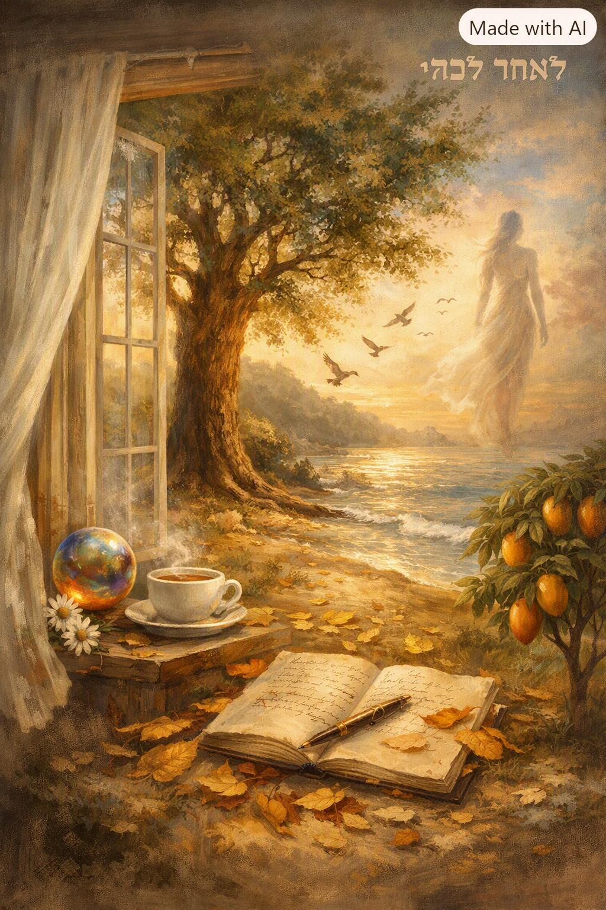

ישנם שירים שנכתבים מתוך מבט פנימי אל מה שנשאר אחרי שהאדם ממשיך בדרכו — עקבות של אור, זיכרון, נדיבות שממשיכה לצמוח. זהו שיר על המשכיות, על שורשים, על מסע הרוח.
לאחר לכתי,
יישארו עקבותיי כרסיסי אור.
הד צחוקי יתגלגל בין הקירות
כמו כדור זכוכית צבעוני,
ניחוחו הראשון של בוקר
יעלה מן האדמה הלחה,
וציפורי השחר יפרשו כנפיים
כדי לברך את היום
במנגינת פרידה.
לאחר לכתי,
העץ שבחצר יוסיף לגדול,
שורשיו יעמיקו אל האדמה
כמו מי שמחפש זיכרון עתיק,
וענפיו ייטו ברוח
כדי לסמן את הזמן
המתחלף לאט
כמו ים בנסיגה.
לאחר לכתי,
יישארו שיריי,
שברי מחשבות שנפלו ממני
כעלים זהובים בסתיו,
נאספו בידי אנשים
שחיפשו בהם נחמה.
כעדות לחיים
כנהר חיים,
אשר זרמו בי.
כאשר אפרוש מן העולם הזה,
רוחי תצא למסעות רחוקים,
תלבש צורות של אור,
של מים,
של צללים נעים.
גופי ישוב אל העפר
הנישא על פני הים,
יהפוך מצע לעץ מנגו צעיר
אשר יצמיח צל
ופרי מתוק,
עדות לנדיבות
של התחלה חדשה.